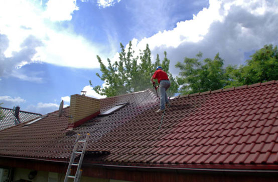
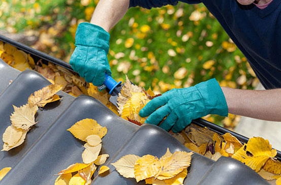

- About
- Services

- Contact
- Blogs
- Testimonials
Pressure Washing Window Cleaning in Belmont: Clear Views Without the Hassle
" for a brighter day "
Pressure Washing Window Cleaning in Belmont: Clear Views Without the Hassle
Keeping your windows sparkling can be a chore, but it doesn't have to be. At Rogers Windows and Gutters, we offer professional pressure washing window cleaning in Belmont that leaves your windows looking flawless. With our skilled team and top-notch equipment, we make sure your home or business shines from the inside out.
What is Pressure Washing Window Cleaning?
Pressure washing is a powerful cleaning method that uses high-pressure water to remove dirt, grime, and stubborn stains. Unlike traditional scrubbing, it gets the job done faster and more effectively, especially for hard-to-reach spots. It’s ideal for Belmont homes dealing with dust, pollen, and pollution buildup. Plus, it’s gentle enough to protect your windows while giving them a crystal-clear finish.
Why Choose Rogers Windows and Gutters?
Here’s the deal: we’re not just about cleaning. We’re about delivering results that make you smile every time you look outside. Here’s what sets us apart:
- Experienced Team: Our crew knows the ins and outs of pressure washing, ensuring every job is done safely and effectively.
- Eco-Friendly Approach: We use biodegradable cleaning solutions to keep your property and the environment safe.
- All-in-One Service: Need more than windows cleaned? We can tackle jobs like roof and gutter cleaning in Belmont while we’re there.
- Inspection: Before we start, we check your windows for existing damage to ensure everything’s in good shape.
- Prep Work: We cover surrounding areas to protect your landscaping and belongings.
- Pressure Washing: Using the right pressure and cleaning solutions, we wash away grime without leaving streaks.
- Final Touch: After cleaning, we inspect each window to ensure it meets our high standards.
How Pressure Washing Improves Window Longevity
Grime and dirt aren’t just unsightly—they can cause long-term damage to your windows. Over time, particles can scratch glass or weaken seals, leading to expensive repairs or replacements. Regular pressure washing removes these contaminants and helps your windows last longer.
Even better, clean windows improve energy efficiency. Without dirt blocking sunlight, your home stays warmer in the winter and cooler in the summer. It’s a win-win!
What Can You Expect During the Service?
We keep the process simple and stress-free. Here’s how it works:
Our team doesn’t cut corners. You can trust us to treat your property with care, leaving it better than we found it.
Pressure Washing vs. Traditional Cleaning
Why go for pressure washing over traditional methods? It saves time, reduces water usage, and gets better results. Plus, it’s a lifesaver for homes with multiple stories or tricky angles.
Let’s be real: dragging out a bucket and ladder isn’t anyone’s idea of fun. With pressure washing, we handle the hard work while you sit back and relax.
Tying It All Together with Comprehensive Cleaning

Your windows aren’t the only part of your home that deserves attention. While we’re at it, why not look into roof and gutter cleaning in Belmont? A clean roof boosts curb appeal and protects your home from damage, while clear gutters ensure proper drainage during heavy rains.
Combining services saves you time and money, plus it guarantees your home looks its absolute best.
Commercial Window Cleaning Services
If you own a business in Belmont, first impressions matter. Clean windows can make your storefront or office look more inviting, setting the tone for customers and clients. We offer flexible scheduling to minimize disruptions so your business keeps running smoothly while we work.
When’s the Best Time for Window Washing?
Spring and fall are popular times for pressure washing, but there’s no bad season to invest in clean windows. Regular cleaning every six months is usually enough to maintain a clear, polished look.
Belmont’s weather can be unpredictable, so it’s always smart to stay ahead of grime buildup. Whether it’s pollen season or after a storm, our team is ready to help.
Book Your Appointment Today

Why wait to enjoy spotless windows? Rogers Windows and Gutters is your go-to for pressure washing window cleaning in Belmont. Whether it’s a one-time refresh or part of a regular cleaning routine, we’re here to make your property shine.
While you’re booking, don’t forget to ask about our roof and gutter cleaning in Belmont. Pairing these services ensures your entire home is in tip-top shape.
Give us a call or request a free quote online today. Let us take the hassle out of cleaning so you can focus on what matters most!